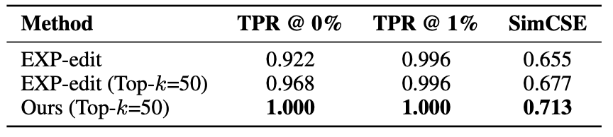
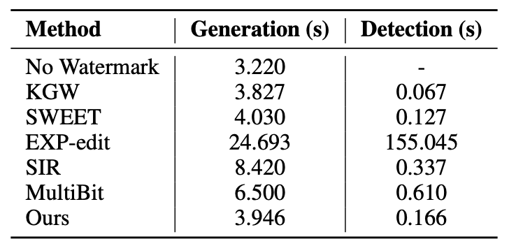
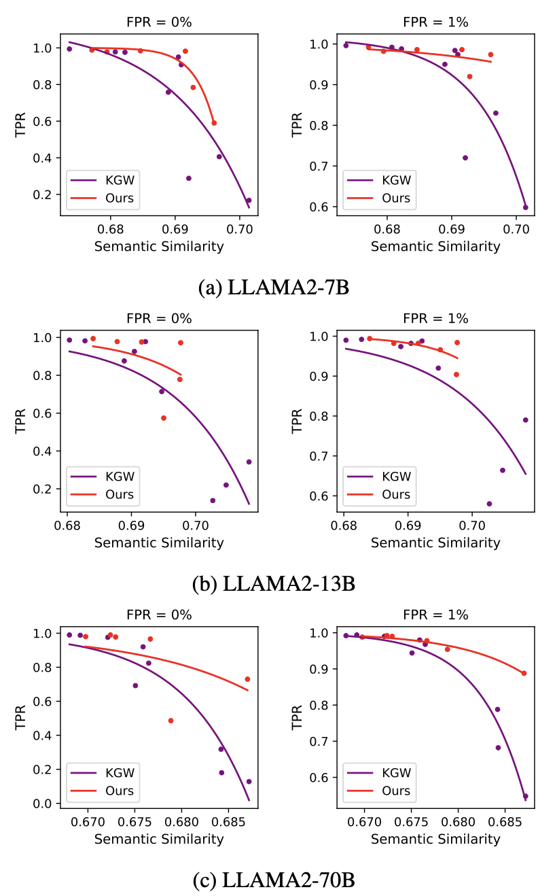
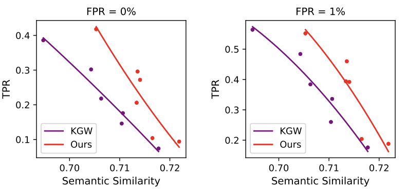
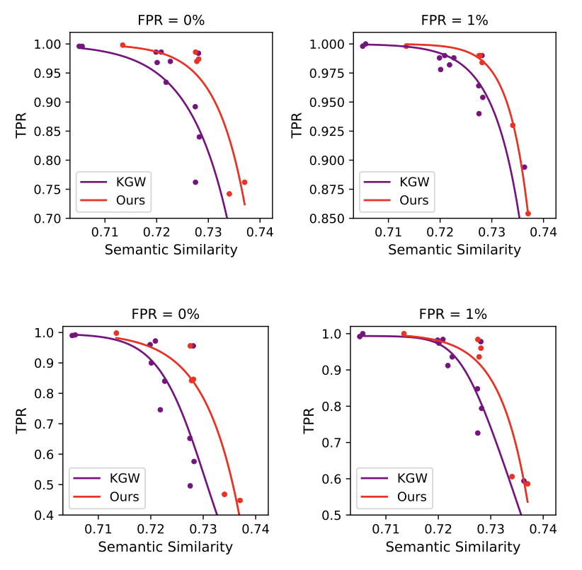
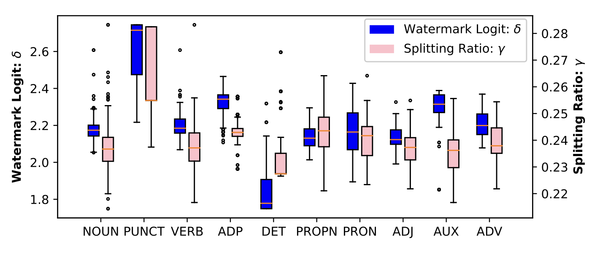

Token-Specific Watermarking with Enhanced Detectability
and Semantic Coherence for Large Language Models
International Conference on Machine Learning (ICML), 2024
- Mingjia Huo*
- Sai Ashish Somayajula*
- Youwei Liang
- Ruisi Zhang
- Farinaz Koushanfar
- Pengtao Xie University of California, San Diego * denotes equal contribution
Abstract
Large language models generate high-quality responses with potential misinformation, underscoring the need for regulation by distinguishing AI-generated and human-written texts. Watermarking is pivotal in this context, which involves embedding hidden markers in texts during the LLM inference phase, which is imperceptible to humans. Achieving both the detectability of inserted watermarks and the semantic quality of generated texts is challenging. While current watermarking algorithms have made promising progress in this direction, there remains significant scope for improvement. To address these challenges, we introduce a novel multi-objective optimization (MOO) approach for watermarking that utilizes lightweight networks to generate token-specific watermarking logits and splitting ratios. By leveraging MOO to optimize for both detection and semantic objective functions, our method simultaneously achieves detectability and semantic integrity. Experimental results show that our method outperforms current watermarking techniques in enhancing the detectability of texts generated by LLMs while maintaining their semantic coherence.
Video
Introduction
The rapid advancements in large language models (LLMs) like ChatGPT have revolutionized artificial intelligence (AI), bringing forth unprecedented capabilities and applications. However, this progress has also introduced significant ethical challenges, such as misuse in election manipulation, creation of fake news, and academic dishonesty. Detecting LLM-generated text is crucial to addressing these issues. Traditional classification-based methods are losing effectiveness as LLM-generated texts become indistinguishable from human-written ones, exemplified by OpenAI's AI classifier, which was withdrawn due to low accuracy.
Watermarking techniques have emerged as a promising solution, embedding hidden patterns in LLM-generated texts that algorithms can detect. The KGW method is a notable example, which uses the hash of the preceding token to create a green list and a red list of tokens. A constant value, the watermark logit, is added to the LLM-produced logits on green list tokens, increasing their selection probability. However, the KGW method compromises semantic coherence by using a constant splitting ratio and watermark logit for all tokens, regardless of context. This uniform approach can lead to inappropriate token selection, disrupting the natural flow of text. For instance, with the prefix "The sun rises in the," the contextually appropriate next word is "east." If the splitting ratio is low, fewer tokens are on the green list, making it less likely that "east" will be included in this green list. Further, a high watermark logit increases the probability of selecting from the green list, thus reducing the chance of choosing "east." This rigid method can significantly impair the semantic coherence of the text.
To address this limitation, we introduce a novel approach that simultaneously achieves two primary goals: preserving the semantic integrity of generated texts and ensuring effective watermark detection. Our method dynamically adjusts the splitting ratio and watermark logit for each token during its generation, controlled by two lightweight networks. These networks process the representation of the previous token to determine the optimal splitting ratio and the appropriate watermark logit for the next token. We achieve our objective using two loss functions: 1. Watermark detectability: This is quantified via a one-sided z-test, which measures the presence of green tokens in the generated text. Since this metric is non-differentiable, we introduce a differentiable surrogate that allows for direct optimization through gradient-based techniques during training. 2. Semantic coherence: This is measured by the cosine similarity between SimCSE embeddings of watermarked and non-watermarked texts. We develop a multi-objective optimization framework that aims to achieve both objectives concurrently, identifying Pareto optimal solutions where improving one objective does not detrimentally affect the other. This balanced approach ensures the effectiveness of watermarking while maintaining the semantic quality of the generated texts.
Method
We propose learning token-specific splitting ratio and watermark logit, i.e., 𝛾t and 𝛿t
We utilize the embeddings of the previous token to generate γt for the current time step, which helps in splitting the vocabulary into red and green list tokens. For each token v in the vocabulary V, yv(t) is sampled from a Bernoulli distribution parameterized by γt. If yv(t) = 1, the token v is assigned to the green list; otherwise, it is assigned to the red list. To make this sampling process differentiable, we apply the Gumbel softmax trick.
Given original logits lv(t) for token v, modified logits after biasing the green-list tokens are, lv(t) + yv(t) * δt
The following training objectives are used,
(1) We define a detection loss to improve the detectability. First, we define the z-score function tailored to our token specific 𝛾t and 𝛿t, i.e.,
Please refer to the paper for more details on the derivation. Since it involves |𝑠|𝐺, which is non-differentiable, we define the following surrogate function.
where 𝑝𝑔𝑟(𝑡) is the probability of selecting a green token.
Maximize 𝑧̂ or minimize detection loss, 𝐿𝐷 = −𝑧̂.
(2) Semantic loss to ensure semantic coherence before and after embedding the watermark. Generate sentence embeddings of texts before and after watermarking, i.e., s and sw, using the SimCSE model fθ. Maximize the cosine similarity between them, cossim(fθ(s), fθ(sw)). Thus, minimize semantic loss, LS = − cossim(fθ(s), fθ(sw)).
Results
The major results of the paper are summarized below. For a more comprehensive explanation, please refer to the paper.
Comparison of the trade-off for semantic integrity and detectability of different methods applied to OPT-1.3B.

Comparison of EXP-edit and Our Method

Generation and detection speed on OPT-1.3B for generating 200 tokens, measured in seconds.

Performance of Ours (trained on OPT-1.3B) and KGW when applied to LLAMA2 7B, 13B, and 70B.

Comparison of our method with KGW under the Dipper paraphrase attack.

Comparison of our method with KGW under the Copy-Paste-1 (the two figures at the top) and Copy-Paste-3 attack (the two figures at the bottom).

Distribution of watermark logit δ (left y-axis) and splitting ratio γ (right y-axis) across different part-of-speech categories of the preceding token.
